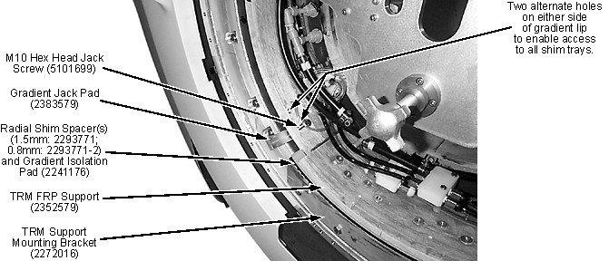

| NOTE: | The gradient has an two holes on each side of its lip. Use the lowest hole on each side while accessing most shim trays. Install jack screws in each upper hole and then remove the jack screws in each lower hole to access the shim trays behind the lower jack screw positions. |
Illustration 4: Jack Screw & Jack Pad Placement
